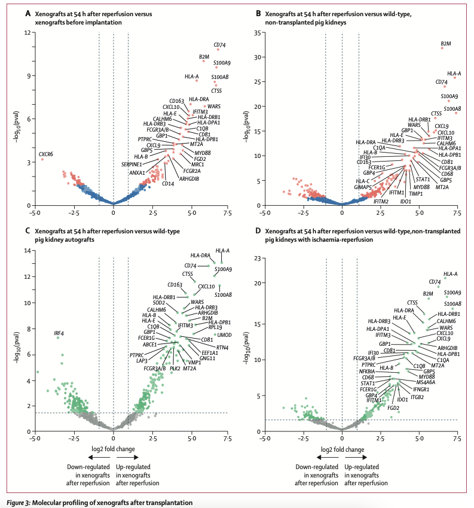
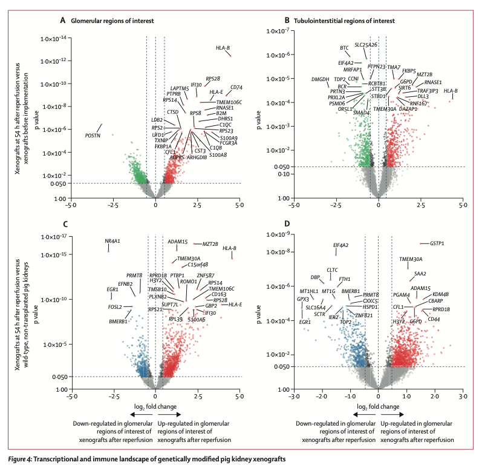
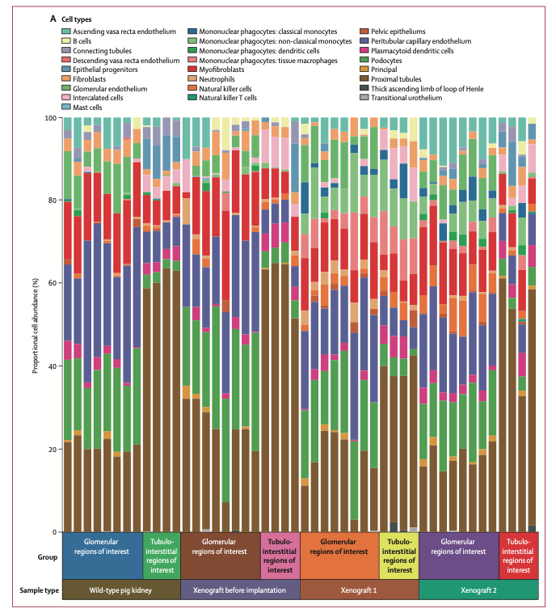
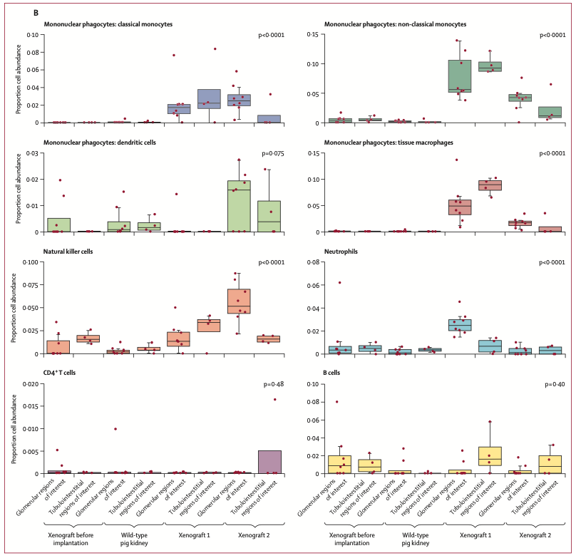

Immune response after pig-to-human kidney xenotransplantation: a multimodal phenotyping study

Volcano plots representing the differential gene expression analysis of xenografts at 54 h after reperfusion compared with controls. Dots represent individual genes.
The association strength (y-axis) is compared with fold change (x-axis) defined by xenografts versus each contrast of interest: xenografts before implantation (A),
wild-type, non-transplanted pig kidneys (B), wild-type pig kidney autografts (C), and wild-type, non-transplanted pig kidneys with ischaemia-reperfusion injury (D).
Significant genes according to p value less than 0·05 are indicated as red dots (A and B) or green dots (C and D).

(A) Volcano plot of the differential gene expression analysis of glomerular regions of interest (eight per biopsy) of xenografts at 54 h after reperfusion compared with
xenografts before implantation. Overexpressed genes according to log2 fold change are indicated in red and underexpressed genes are indicated in green. (B) Volcano
plot of the differential gene expression analysis of tubulointerstitial regions of interest (four per biopsy) of xenografts at 54 h after reperfusion compared with
xenografts before implantation. Overexpressed genes according to log2 fold change are indicated in red and underexpressed genes are indicated in green. (C) Volcano
plot of the differential gene expression analysis of glomerular regions of interest (eight per biopsy) of xenografts at 54 h after reperfusion compared with wild-type,
non-transplanted pig kidneys. Overexpressed genes according to log2 fold change are indicated in red and underexpressed genes are indicated in blue. (D) Volcano
plot of the differential gene expression analysis of tubulointerstitial regions of interest (four per biopsy) of xenografts at 54 h after reperfusion compared with wild-
type, non-transplanted pig kidneys. Overexpressed genes according to log2 fold change are indicated in red and underexpressed genes are indicated in blue. In all
panels, dots represent individual genes and the association strength (y axis) is compared with fold change (x axis).
In the glomerular regions
- monocyte and macrophage activation (CD74)
- complement activation(C1QB)
- endothelial activation (POSTN and LDB2)
- natural killer cell burden (FCGR3A and HLA-E)
- innate immune system (CST3, PTPRB, and TXNIP)
- injury repairresponse, tissue damage, and cell processes, compared
with the glomerular regions of interest of xenografts before
implantation
in the tubulointerstitial regions
- macrophage activation(TMEM30A)
- humoral response (HLA-B) → B 세포 활성화, complement와 연관

